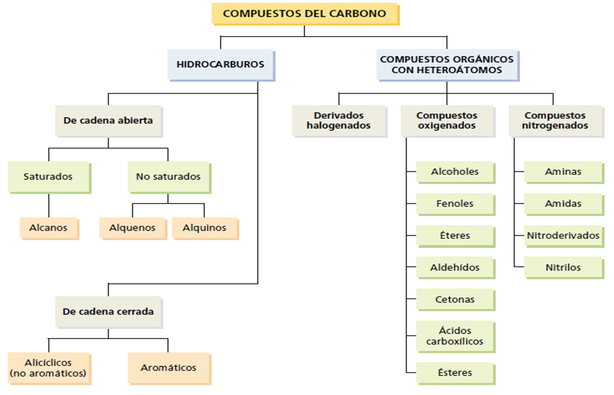

¿Qué entendemos por Química Orgánica?
La Química Orgánica es la rama de la química que se encarga del estudio de los compuestos que contienen carbono, excluyendo generalmente los carbonatos, los óxidos y los cianuros metálicos. Esta área se centra en la estructura, propiedades, reacciones y síntesis de los compuestos orgánicos. Su importancia radica en que el carbono es un elemento versátil que puede formar una gran variedad de enlaces, dando origen a millones de compuestos, muchos de los cuales tienen funciones clave en los organismos vivos y en productos industriales.
MATERIAL DE APOYO:
- A continuación, se presentan tres recursos de apoyo que te permitirán profundizar en la caracterización e importancia de la química orgánica. Te invitamos a revisarlos y estudiarlos con atención, ya que serán la base para las actividades que realizarás a continuación:
VER: VIDEO DE APOYO
¿Qué es la química Orgánica? Una de las ramas más complicadas (pero también importantes) de la química. En este video veremos un poco de su historia, sus características y sus utilidades en el mundo moderno. Obsérvalo con detenimiento y mucha atención, puesto que necesitaras hacer uso de su información para trabajar las actividades que encontraras más adelante:
Tomado de: A Ciencia Cierta. (2021, 21 de enero). La química orgánica | ¿Qué es? ¿Qué estudia? y ¿Cómo surgió?
VER: LECTURA DE APOYO
A continuación, encontraras una lectura que te brindara información adicional sobre los compuestos orgánicos, tales como su definición, importancia en el mundo actual, abundancia de compuestos orgánicos en el mundo y tipos de compuestos orgánicos en el cuerpo humano. Estúdiala con detenimiento y mucha atención, puesto que necesitaras hacer uso de su información para trabajar las actividades que encontraras más adelante:
VER: MAPA CONCEPTUAL
En el siguiente esquema encontrarás un bosquejo del amplio campo que abarca la química del carbono. Sin embargo, el actual recurso se centrará en trabajar específicamente los hidrocarburos saturados de tipo alcanos. Durante el desarrollo de este recurso trabajaremos toda la información pertinente a dichos compuestos: 